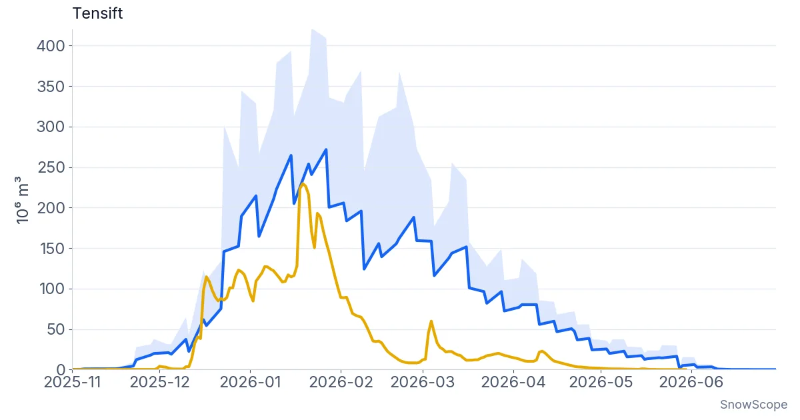
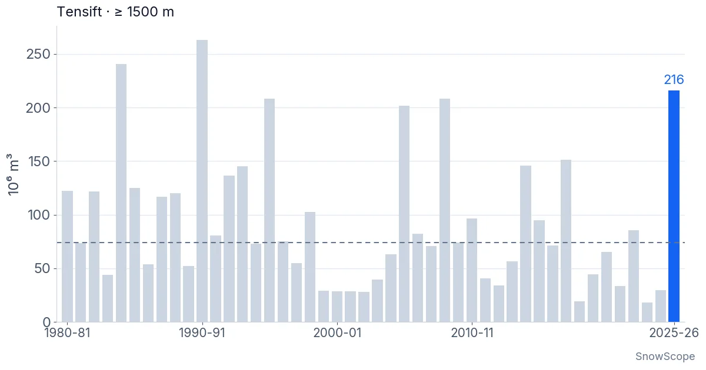

La nieve del Alto Atlas en el invierno 2025-26: lo que dicen una estación, un satélite radar y 46 inviernos
Tras cinco inviernos flojos, el Alto Atlas por fin tuvo un invierno de verdad. La estación automática de Oukaïmeden, a 2.650 m, midió 92 cm de nieve el 19 de enero de 2026. Un satélite radar vio nieve en toda la montaña del Tensift, y nuestro modelo de nieve coloca el invierno en tercer lugar de 46. Esto es lo que muestra cada una de estas fuentes, y dónde no coinciden.
Consulta la previsión de nieve en tiempo real de Oukaïmeden en la app SnowScopeEspesor de nieve, alertas de nieve polvo y mapa 3D, gratis.Lo que midió la estación de la meseta
La estación de Oukaïmeden está en la meseta abierta, bajo los remontes. Un sensor colgado de un mástil mira hacia abajo y mide con sonido la distancia hasta la superficie de la nieve: el espesor de nieve es el cambio de esa distancia. Un segundo sensor en el suelo cuenta la radiación natural que sale de la tierra: cuanta más agua hay encima en forma de nieve, más débil es la señal. Así se obtiene el agua de la nieve, es decir, la cantidad de agua que tendríamos si fundiéramos toda la nieve.
Nuestra serie empieza el 1 de enero de 2026, y esa mañana ya había 44 cm de nieve en el suelo. Un temporal el 5 y 6 de enero llevó el espesor a 62 cm. Después la nieve se fue asentando durante diez días, como hace siempre la nieve reciente, hasta 51 cm el 16 de enero. Luego llegó el gran temporal del invierno: del 17 al 19 de enero el espesor subió a 92 cm, el valor más alto de nuestra serie. El 20 de enero la nieve contenía 205 mm de agua.

Dieciocho días sin datos
Entonces el registrador se paró. Del 22 de enero al 8 de febrero no hay ningún dato, un hueco de 18 días, justo después de la nieve más gruesa del invierno. Cuando la estación volvió el 9 de febrero, el espesor era de 33 cm. No sabemos si la nieve se mantuvo un tiempo cerca de 90 cm y luego se fundió, o si entretanto nevó más y se fundió. No hemos intentado rellenar este hueco. En el primer gráfico aparece como una franja gris con un signo de interrogación, porque esa es la respuesta honesta.
Después del 9 de febrero la fusión es clara y rápida. El sol es fuerte en esta latitud, el aire era templado y el espesor bajó casi cada día. El 21 de febrero el sensor de espesor vio el suelo desnudo. Un temporal corto devolvió la nieve el 3 de marzo, hasta 17 cm el 5 de marzo, pero en una semana había desaparecido. El sensor de agua aún veía una capa fina de nieve y hielo hasta mediados de marzo, seguramente en manchas junto al sensor, y marcó cero desde el 16 de marzo.
Un detalle más del terreno. De abril a agosto el sensor de espesor no ve nieve: ve la hierba y las plantas que crecen bajo el mástil. Sin un filtro, la meseta parecería nevada en mayo. Por eso ponemos el espesor a cero en cuanto el suelo deja de ser blanco y el sensor de agua no mide nada.
Lo que vio el radar desde el espacio
Una sola estación habla de un solo punto. Para ver toda la cordillera usamos el espesor de nieve estimado por un satélite radar. El radar ve a través de las nubes y funciona de noche, algo importante en un invierno de temporales. Entre septiembre y julio los satélites pasaron 110 veces sobre la montaña del Tensift, cada pocos días, y cada pasada nos dio un mapa del espesor de nieve. Para pasar del espesor al agua usamos la densidad de la nieve de nuestro modelo.
En toda la cuenca del Tensift, 13.051 km² desde las llanuras de Marrakech hasta las cumbres alrededor del Toubkal, el radar muestra cómo la nieve se acumula deprisa a finales de diciembre. La mayor superficie nevada, 1.881 km², llegó el 22 de enero. La mayor cantidad de agua almacenada en la nieve llegó el 27 de enero, con unos 272 millones de m³. Si la nieve era más densa de lo que supone nuestro modelo, el valor real podría llegar a 409 millones de m³. Nuestro modelo de nieve, calculado en la misma zona, alcanza su máximo de 230 millones de m³ el 19 de enero, el mismo día en que la estación midió su nieve más gruesa.

Donde el radar y el modelo no coinciden
Los dos coinciden en cómo creció el invierno y en su tamaño. No coinciden en la primavera. En el modelo la nieve se fue deprisa: la mitad del máximo había desaparecido el 31 de enero, y el 1 de marzo solo quedaba el 5 %. En la vista radar, la mitad seguía allí el 9 de febrero, y el 1 de marzo quedaba el 59 %. Los mapas de nieve de un satélite óptico, que solo ven si el suelo está blanco o no, quedan en medio: el 1 de marzo aún mostraban el 24 % de la mayor superficie nevada.
¿Quién tiene razón? Probablemente ninguno del todo. Puede que el modelo funda la nieve demasiado rápido en las laderas altas y en sombra: con cuadrados de 1 km no ve una canal orientada al norte. El radar tiene su propio punto débil: cuando la nieve está húmeda devuelve la señal de otra manera, y el método tiene que adivinar. En el punto de la estación el radar fue demasiado generoso. En las 15 pasadas con nieve en la estación o en la vista radar, el radar marcó de media 32 cm más que el sensor del mástil, con un error típico de 42 cm en un solo día. Alrededor de la estación aún mostraba nieve el 16 de marzo, unas 3 semanas después de que el sensor de espesor viera el suelo desnudo.
Parte de esa diferencia no es un error en absoluto. Un píxel de radar cubre un trozo de ladera, no la meseta llana bajo un solo mástil. Las canales orientadas al norte y las hondonadas donde el viento acumula nieve la conservan mucho más que el sitio de la estación. Pero otra parte viene del método, y no nos fiaríamos de una cifra del radar en un solo lugar y un solo día.
Frente a 46 inviernos
Para situar este invierno en la historia usamos nuestro modelo de nieve para la montaña del Tensift por encima de 1.500 m, una zona de 3.843 km², a lo largo de 46 inviernos de 1980-81 a 2025-26. El modelo no es una medición, pero trata todos los inviernos de la misma manera, que es lo que necesita una comparación.
En el invierno 2025-26 la nieve de esta zona contenía 216 millones de m³ de agua en su máximo, el 19 de enero. Es el tercer valor más alto en 46 inviernos, tras 1990-91 (263) y 1984-85 (241), y unas 2,9 veces el máximo habitual, el valor central de todos los inviernos, que es 74. Los cinco inviernos anteriores tuvieron máximos de entre 18 y 86, y 2023-24 fue el más pobre de toda la serie. Tras una racha así, un invierno cerca de lo más alto de la lista importa para los ríos de abajo y para los pozos y embalses de la llanura.

Lo que cada fuente puede decir y lo que no
La estación es la única medición real. Es precisa en un punto y a una altitud, pero no vio nada antes del 1 de enero, nada durante 18 días clave, y dice poco de las cumbres que están 1.000 m más arriba.
El radar cubre toda la cordillera, también a través de las nubes. Muestra bien dónde está la nieve y cómo se fue formando la temporada. Es débil en el espesor exacto en un lugar y con la nieve húmeda de primavera, así que sus cifras de primavera llevan un margen amplio.
El modelo da la visión larga: 46 inviernos tratados igual. Coincide con la estación en la fecha del máximo, pero en primavera funde la nieve más deprisa de lo que sugieren los dos satélites. Leídas juntas, las tres fuentes cuentan una historia coherente: un gran invierno, con el máximo en la segunda mitad de enero, seguido de una fusión rápida en las alturas medias y más lenta en las laderas altas y en sombra.
¿Hasta qué punto estamos seguros?
Seguros del panorama general: fue un gran invierno, muy por encima de los cinco anteriores. Bastante seguros de las fechas: las tres fuentes sitúan el máximo entre el 19 y el 27 de enero. Menos seguros de la cantidad de agua, que depende de la densidad de la nieve, y menos aún de cuánto duró la nieve en primavera, donde el radar y el modelo se separan varias semanas.
Consejos para esquiadores
- En el Atlas, uno o dos temporales pueden hacer un invierno: en la previsión, fíjate en los grandes sistemas que llegan del Atlántico más que en las medias mensuales.
- A la altura de la estación de esquí, la nieve puede desaparecer dos o tres semanas después del último temporal; ve poco después de una gran nevada.
- Las laderas norte y las canales por encima de 3.000 m conservan la nieve mucho más que la meseta; también es ahí donde los aludes y la nieve dura y helada son más probables.
- Antes de cualquier salida fuera de pista, consulta el último boletín meteorológico y pregunta a los guías de montaña locales por las condiciones.
Referencias y créditos
- Lievens, H. et al. (2019). Snow depth variability in the Northern Hemisphere mountains observed from space. Nature Communications 10, 4629. doi.org/10.1038/s41467-019-12566-y
- Lievens, H. et al. (2022). Sentinel-1 snow depth retrieval at sub-kilometer resolution over the European Alps. The Cryosphere 16, 159-177. doi.org/10.5194/tc-16-159-2022
- SnowScope: ¿Se está llevando el cambio climático la nieve del Atlas? Oukaïmeden y 46 inviernos de datos. snowscope.app/blog/en/2026/11/atlas-snow-climate-change-oukaimeden-46-winters.html
Sobre estas cifras
Estación: estación meteorológica automática de Oukaïmeden (2.650 m, 31,2065 N, 7,8663 O), sensor ultrasónico de espesor de nieve (SR50A) y sensor gamma de agua de la nieve (CS725), archivos brutos del registrador desde el 1 de enero de 2026; mediana diaria del espesor tras filtros de calidad y de picos, descontado el desfase del suelo desnudo, espesor puesto a cero cuando el suelo está sin nieve (eco de la vegetación de abril a agosto). Huecos del registrador: 10-11 de enero y 22 de enero-8 de febrero de 2026. Radar: espesor de nieve de Sentinel-1 (método del cambio en polarización cruzada de Lievens et al. 2019, 2022, adaptado al Alto Atlas; pasadas de la mañana, malla de 100 m), cuenca del Tensift 13.051 km², agua de la nieve = espesor × densidad de nuestro modelo; rango = otras densidades. Cobertura de nieve óptica: MODIS. Modelo: nuestro modelo de nieve de Marruecos a 1 km (manto de grados-día forzado con ERA5-Land, corregido por altitud), celdas del Tensift por encima de 1.500 m, 46 años hidrológicos de 1980-81 a 2025-26. Todas las cifras: scripts de análisis de SnowScope, 10 de noviembre de 2026.
Citar este informe
Para investigación, docencia o prensa: cifras y gráficos reutilizables libremente bajo CC BY 4.0 con esta cita.
SnowScope (2026), La nieve del Alto Atlas en el invierno 2025-26: lo que dicen una estación, un satélite radar y 46 inviernos, https://snowscope.app/blog/es/2026/11/high-atlas-snow-winter-2025-26-station-radar-46-winters.html, consultado el 2026-11-10
SnowScope (Atlas Labs). (2026, November 10). La nieve del Alto Atlas en el invierno 2025-26: lo que dicen una estación, un satélite radar y 46 inviernos. SnowScope snow reports. https://snowscope.app/blog/es/2026/11/high-atlas-snow-winter-2025-26-station-radar-46-winters.html
BibTeX
@misc{snowscope2026highatlassnowwinter20252,
author = {{SnowScope (Atlas Labs)}},
title = {La nieve del Alto Atlas en el invierno 2025-26: lo que dicen una estación, un satélite radar y 46 inviernos},
year = {2026},
month = nov,
howpublished = {\url{https://snowscope.app/blog/es/2026/11/high-atlas-snow-winter-2025-26-station-radar-46-winters.html}},
note = {Published 2026-11-10 16:53 UTC; accessed 2026-11-10}
}· CC BY 4.0 · Métodos, datos y herramientas →
Oukaïmeden: nieve y temperatura según la altura, este invierno vs el pasado (herramientas) →
Sigue Oukaïmeden
Gratis: un aviso cuando llega la nieve y la previsión cada mañana.
Más partes de nieve

Las estaciones de esquí del Atlas no tienen nieve en sus pistas hoy. Nuestro modelo solo encuentra nieve en las cumbres más altas: unos 80 km² de …

Michlifen, cerca de Ifrane, tiene nieve en episodios cortos más que una temporada. Lo que muestran 46 inviernos pasados, por qué el espesor habitual es cero y cómo estar allí los días buenos.

Todavía sin nieve en Oukaimeden. La previsión estacional europea ve un diciembre más cálido en el Alto Atlas, y nuestro mapa muestra probabilidades más bajas en casi todas las cumbres.